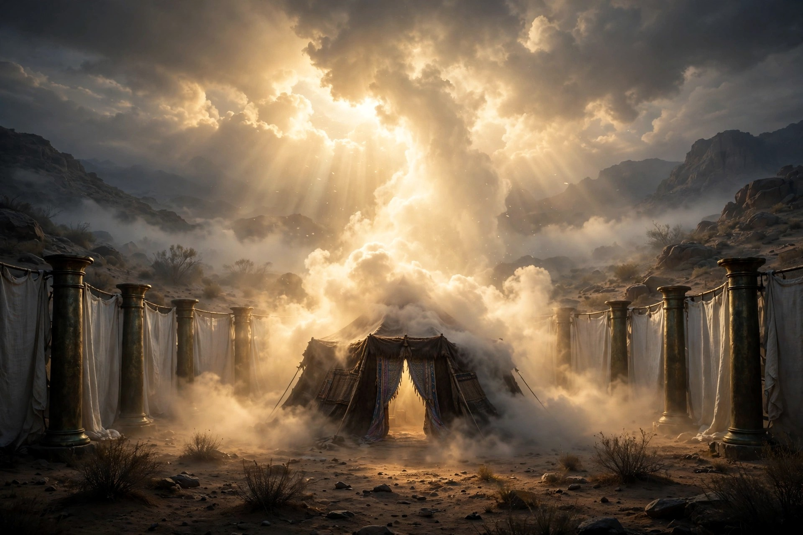

For this light momentary affliction is preparing for us an eternal weight of glory beyond all comparison.
2 Corinthians 4:17 (ESV)
God’s glory is not merely a bright light or an intense religious feeling. It is the weight, the worth, the beauty, and the greatness of God made known. God does not become more glorious — His glory is eternally perfect. Rather, He reveals it, and creatures recognize it and honor it. If you trace the word “glory” from Genesis to Revelation, you are tracing one golden thread through the whole Bible: God making His weight known — lost in the fall, dwelling in the tabernacle, departing in judgment, returning in promise, and finally, in Christ, given to His people forever.
It starts in Eden: the image of God
The thread begins before the word “glory” is ever used. “So God created man in his own image, in the image of God he created him; male and female he created them” (Genesis 1:27). We were made as mirrors — small, created reflectors of the greatness of God. A mirror has no light of its own; its whole glory is what it reflects. That was our dignity: to carry the image of the glorious God into His world.
The bad news: we fall short of the glory
Here is where the thread goes dark, and we have to be honest about it. “For all have sinned and fall short of the glory of God” (Romans 3:23). Paul doesn’t just say we broke rules. He says we fall short of glory — we come up short of the very thing we were made to reflect. And Romans 1 tells us how it happened: instead of honoring the glorious God, we “exchanged the glory of the immortal God for images resembling mortal man and birds and animals and creeping things” (Romans 1:23). We traded the weighty God for lightweight substitutes — created things, and most of all, ourselves. Worship turned inward. Every sin since Eden is that same exchange in miniature: God’s glory treated as light, and our own desires treated as heavy.
Glory is also inseparable from God’s holiness — His absolute moral purity and uniqueness. When Isaiah saw the Lord in the temple, the seraphim cried, “Holy, holy, holy is the LORD of hosts; the whole earth is full of his glory!” (Isaiah 6:3). Notice what the vision did to Isaiah. He did not strut; he came undone, conscious of his sin and his unclean lips. Encountering glory produces awe and repentance, never self-exaltation. That is the bad news in its sharpest form: the glorious God is holy, we are not, and we cannot stand in His presence on our own.
Kabod: glory is weight
The Hebrew word underneath all of this is worth slowing down for. Glory is kabod (כָּבוֹד) — and the root of kabod means heavy, weighty, substantial. Glory is God’s weightiness. He is not a light thought, not an optional idea, not small enough to ignore. He has substance. He presses on everything. When the Bible says God is glorious, it is saying God matters — infinitely, heavily, more than anything else in the room.
Because glory is weight, its departure is the worst news a person or a nation can hear. When the ark of God was captured by the Philistines, a dying mother named her newborn with the tragedy: “And she named the child Ichabod, saying, ‘The glory has departed from Israel!’ because the ark of God had been captured” (1 Samuel 4:21). Ichabod — “no glory,” “the glory is gone.” Centuries later, the prophet Ezekiel watched it happen at the temple itself: in Ezekiel 10, the glory of the LORD rises from the cherubim, pauses at the threshold of the house, and departs to the mountain east of Jerusalem — God withdrawing His dwelling presence from a people who would not have Him (Ezekiel 10:4, 18–19; 11:22–23).
But departure is not the last word. The same Ezekiel was shown the return: “And behold, the glory of the God of Israel was coming from the east. And the sound of his coming was like the sound of many waters, and the earth shone with his glory… As the glory of the LORD entered the temple by the gate facing east, the Spirit lifted me up and brought me into the inner court; and behold, the glory of the LORD filled the temple” (Ezekiel 43:2, 4–5). What sin drove out, God promised to bring back. Hold that promise in your hand — it runs straight to Jesus.
Moses: “Please show me your glory”
Moses asked for glory by name. “Moses said, ‘Please show me your glory.’ And he said, ‘I will make all my goodness pass before you and will proclaim before you my name “The LORD.” And I will be gracious to whom I will be gracious, and will show mercy on whom I will show mercy’” (Exodus 33:18–19). Do you see what God counts as His glory? His goodness. His name — His character — proclaimed: gracious and merciful, sovereign in grace. God’s glory is not bare power. It is His goodness on display.
And there was a limit for Moses: “You cannot see my face, for man shall not see me and live” (Exodus 33:20). So God put him in the cleft of the rock, covered him with His hand, and let him see His back as the glory passed by (Exodus 33:21–23). Even that glimpse marked the man — Moses came down the mountain with his face shining, and he wore a veil over the brightness (Exodus 34:29–35).
Paul picks up that veil in 2 Corinthians 3 and says: if the old covenant came with that much glory, what about the new? “Now if the ministry of death, carved in letters on stone, came with such glory that the Israelites could not gaze at Moses’ face because of its glory, which was being brought to an end, will not the ministry of the Spirit have even more glory?” (2 Corinthians 3:7–8). And the chapter lands here: “And we all, with unveiled face, beholding the glory of the Lord, are being transformed into the same image from one degree of glory to another. For this comes from the Lord who is the Spirit” (2 Corinthians 3:18). Moses hid his face behind a veil. In Christ, the veil is off. We behold — and beholding, we are changed.
The glory that fills the house
God’s glory is not an idea; it is His dwelling presence, and twice in the Old Testament it filled a house so full that ministry had to stop. At the tabernacle: “Then the cloud covered the tent of meeting, and the glory of the LORD filled the tabernacle. And Moses was not able to enter the tent of meeting because the cloud settled on it, and the glory of the LORD filled the tabernacle” (Exodus 40:34–35). At Solomon’s temple, the same weight descended: “And when the priests came out of the Holy Place, a cloud filled the house of the LORD, so that the priests could not stand to minister because of the cloud, for the glory of the LORD filled the house of the LORD” (1 Kings 8:10–11). Priests who could not stand. That is kabod — glory with weight, God present as the covenant Lord, holy and powerful and committed to His people. And both houses were signposts, pointing to the day God would dwell among us not in a tent or a temple, but in flesh.
Glory in the Psalms
Israel sang about this weight. “The heavens declare the glory of God, and the sky above proclaims his handiwork” (Psalm 19:1) — creation itself preaches His weight every day, to people who will never open a Bible. The Psalms call Him by a title: “Who is this King of glory? The LORD of hosts, he is the King of glory!” (Psalm 24:10) — the gates of the city are told to lift up their heads for the King who comes in (Psalm 24:7–10). In the storm Psalm, “in his temple all cry, ‘Glory!’” (Psalm 29:9). The prayer of Psalm 72 is the prayer of the whole Bible: “Blessed be his glorious name forever; may the whole earth be filled with his glory! Amen and Amen!” (Psalm 72:19). And Psalm 115 sets the direction of every true prayer: “Not to us, O LORD, not to us, but to your name give glory, for the sake of your steadfast love and your faithfulness!” (Psalm 115:1). Not to us. To Your name. That one line will straighten out any ministry, any church, any heart.
Christ: the supreme revelation of glory
Everything before Christ is a signpost; Christ is the destination. “And the Word became flesh and dwelt among us, and we have seen his glory, glory as of the only Son from the Father, full of grace and truth” (John 1:14). “Dwelt” is tabernacle language — God pitched His tent among us, and the glory that filled the tent now walked in a body. Jesus is not merely a messenger showing God’s glory: “He is the radiance of the glory of God and the exact imprint of his nature” (Hebrews 1:3).
Once, on a mountain, the veil slipped. “And he was transfigured before them, and his face shone like the sun, and his clothes became white as light” (Matthew 17:2). Moses’ face once shone with a borrowed, fading brightness; Jesus’ face shone with His own. Peter never forgot it. Late in life he wrote that at the transfiguration Jesus “received honor and glory from God the Father, and the voice was borne to him by the Majestic Glory, ‘This is my beloved Son, with whom I am well pleased’” (2 Peter 1:17). Peter calls God Himself “the Majestic Glory.” That is who spoke on the mountain.
And hear Jesus pray, the night before the cross, in John 17. He speaks of “the glory that I had with you before the world existed” (John 17:5) — glory shared with the Father before creation. Then He says the most astonishing thing in the chapter: “The glory that you have given me I have given to them, that they may be one even as we are one” (John 17:22). Glory is not only displayed to believers; in Christ, it is given to them. And His great desire for us is this: “Father, I desire that they also, whom you have given me, may be with me where I am, to see my glory that you have given me because you loved me before the foundation of the world” (John 17:24). The cross appears weak, but the cross is where the glory of God’s justice, mercy, love, and sovereign saving purpose meet in one place. The resurrection confirms the victory; the ascension displays the exaltation: “Therefore God has highly exalted him and bestowed on him the name that is above every name, so that at the name of Jesus every knee should bow, in heaven and on earth and under the earth, and every tongue confess that Jesus Christ is Lord, to the glory of God the Father” (Philippians 2:9–11).
Salvation restores the image
So salvation is the recovery of glory. It is by grace alone, never by human merit: “For by grace you have been saved through faith. And this is not your own doing; it is the gift of God, not a result of works, so that no one may boast. For we are his workmanship, created in Christ Jesus for good works, which God prepared beforehand, that we should walk in them” (Ephesians 2:8–10). The Holy Spirit gives spiritual life and turns sinners to Christ. Then the beholding begins — “from one degree of glory to another” (2 Corinthians 3:18) — God remaking the cracked mirror until it reflects Him again. That is sanctification: God’s ongoing work of making His redeemed people holy. Good works do not earn salvation; they are its fruit, prepared beforehand by the same gracious hand.
Glory in the furnace: Stephen, and your suffering
Glory is not only for mountaintops. Stephen, the first martyr, stood before a council that was about to stone him, “but he, full of the Holy Spirit, gazed into heaven and saw the glory of God, and Jesus standing at the right hand of God” (Acts 7:55). Jesus standing — risen, attentive, receiving His witness home. In the worst moment of Stephen’s life, heaven opened on glory.
That is why Paul can write the sentence this whole teaching hangs on: “For this light momentary affliction is preparing for us an eternal weight of glory beyond all comparison” (2 Corinthians 4:17). Now you know why he chose the word weight. Affliction feels heavy; compared to kabod, it is light. Your suffering is real, and it is also governed — because God is sovereign, even affliction is being worked toward His glory and His people’s good, preparing a glory that will outweigh it beyond all comparison. The stones were real for Stephen. The glory was heavier.
The end of the thread: a city that needs no sun
The promise to Israel stands as a banner over the end of the story: “Arise, shine, for your light has come, and the glory of the LORD has risen upon you. For behold, darkness shall cover the earth, and thick darkness the peoples; but the LORD will arise upon you, and his glory will be seen upon you” (Isaiah 60:1–2). And the Bible’s last chapters show the thread arriving home. The final goal is not escape from creation but renewed creation: “And the city has no need of sun or moon to shine on it, for the glory of God gives it light, and its lamp is the Lamb” (Revelation 21:23). “They will see his face, and his name will be on their foreheads. And night will be no more. They will need no light of lamp or sun, for the Lord God will be their light, and they will reign forever and ever” (Revelation 22:4–5). Remember Exodus 33: no man could see God’s face and live. In Revelation 22, His servants see His face — and live forever. What Moses could only glimpse from the cleft of the rock, the redeemed will behold in the open. The glory we now know by faith will then be seen fully.
One thread, start to finish
Trace it once more, end to end: made in God’s image in Eden (Genesis 1:27); fallen short of His glory in sin (Romans 3:23); glory dwelling in the tabernacle and the temple (Exodus 40; 1 Kings 8); glory departing in judgment — Ichabod (1 Samuel 4:21; Ezekiel 10); glory promised to return (Ezekiel 43); glory arriving in flesh in Jesus Christ (John 1:14); glory given to His people and growing in them degree by degree (John 17:22; 2 Corinthians 3:18); glory seen in the furnace (Acts 7:55); and glory filling a renewed creation where God is the light (Revelation 21–22). One thread, one God, one weight.
So worship means more than singing: it is the whole life turned toward God’s worth — through Scripture, prayer, obedience, the local church, family worship, and faithful work. “So, whether you eat or drink, or whatever you do, do all to the glory of God” (1 Corinthians 10:31). Not to us, O LORD, not to us — but to Your name give glory.
Christ Proclaimed. Jesus is Lord.
Reflect — Questions & Answers
1. What does the Hebrew word kabod teach us about God’s glory? Kabod (כָּבוֹד) means weight, heaviness, substance. God’s glory is His weightiness — He is not light, small, or ignorable; He matters most. That is why its loss has a name — Ichabod, “The glory has departed from Israel!” (1 Samuel 4:21) — and why Paul can call our affliction “light” beside “an eternal weight of glory beyond all comparison” (2 Corinthians 4:17).
2. What did Moses actually see when he asked, “Please show me your glory”? God’s goodness and His name proclaimed: “I will make all my goodness pass before you and will proclaim before you my name ‘The LORD’” (Exodus 33:19). God’s glory is His character on display — gracious and merciful. In this life we behold that glory in Christ with unveiled face (2 Corinthians 3:18); in the age to come, “they will see his face” (Revelation 22:4).
3. How does the glory that departed in the Old Testament come back? God showed Ezekiel the return — the glory entering by the east gate until “the glory of the LORD filled the temple” (Ezekiel 43:4–5) — and then He kept the promise in a greater house: “the Word became flesh and dwelt among us, and we have seen his glory” (John 1:14). The glory that filled the tabernacle came in person, in Christ.
4. What does God’s glory have to do with my suffering right now? Everything. Stephen saw “the glory of God, and Jesus standing at the right hand of God” (Acts 7:55) in the moment of his death, and Paul promises that present affliction “is preparing for us an eternal weight of glory beyond all comparison” (2 Corinthians 4:17). Your suffering is real, but it is not the heaviest thing in your story. His glory is.
The Hope Connection Podcast
Real hope, no judgment — meeting others where they are in the Name of Jesus. Hear Lewis’s story and new episodes every week.